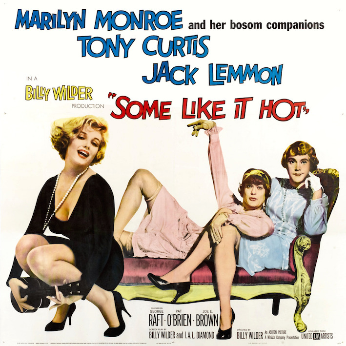
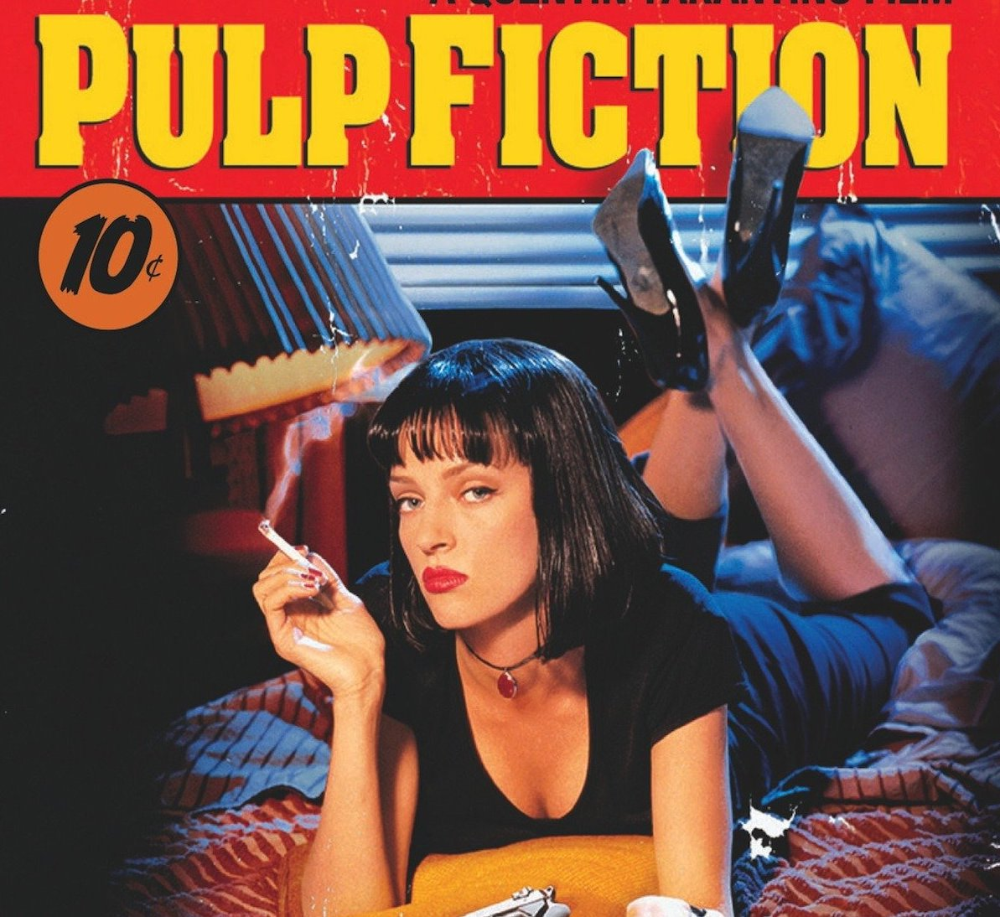
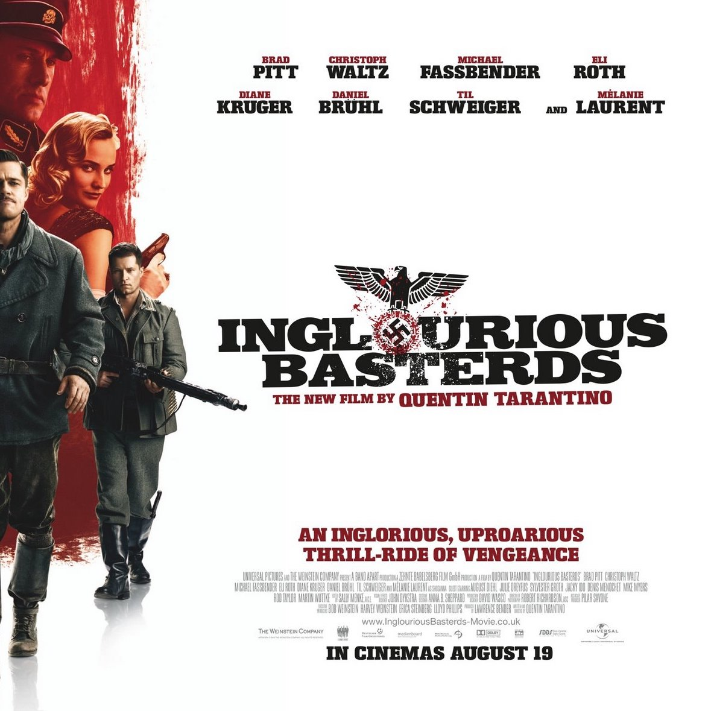

I used to work in education, hospitality and in a press office, but I'm still looking for my dream career path. That's why I chose this course! I also think that coding is similar to playing music and I love playing piano!
|  |
Some like it hotAfter witnessing a Mafia murder, slick saxophone player Joe (Tony Curtis) and his long-suffering buddy, Jerry (Jack Lemmon), improvise a quick plan to escape from Chicago with their lives. Disguising themselves as women, they join an all-female jazz band and hop a train bound for sunny Florida. |
|  |
Pulp fictionSeries of less-and-more related but separated short stories of crime and comedy that each result into an unexpected ending including unexpected deaths, sudden twists, black comedy events and horrific conclusions of crime and its following consequences. |
|  |
Inglorious bastardsIn Nazi-occupied France during World War II, a plan to assassinate Nazi leaders by a group of Jewish U.S. soldiers coincides with a theatre owner's vengeful plans for the same. |